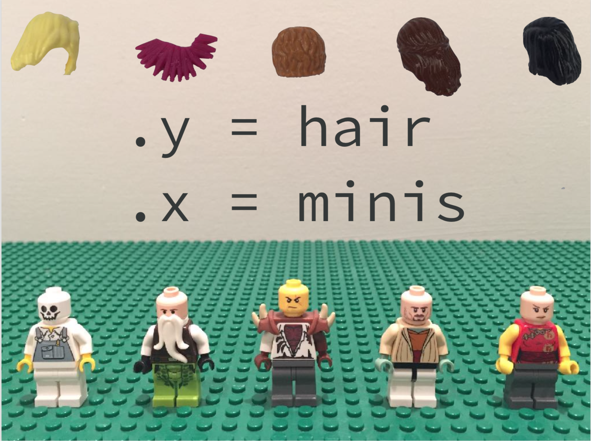
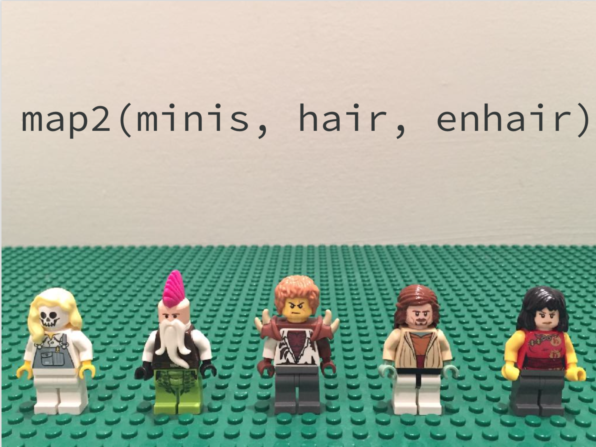

Lecture 7: Mapping and nested data frames#
Lecture learning objectives:#
By then end of this lecture & worksheet 7, students should be able to:
Write and use anonymous functions in R in isolation and in combination the functional {purrr}
map(OPTIONAL) Understand the general ideas of the
map*,map2*andpmap*variant functions in the {purrr} package and the six types of output options (list, double, integer, logical, character and data frame).Create and modify nested data frames using {dplyr}
group_by+ {tidyr}nestand {purrr}map*functionsCreate unnested data frames using {tidyr}
unnestDescribe situations where nested data frames are useful
library(gapminder)
library(infer)
library(tidyverse)
options(repr.matrix.max.rows = 10)
── Attaching core tidyverse packages ───────────────────────────────────────────── tidyverse 2.0.0 ──
✔ dplyr 1.1.2 ✔ readr 2.1.4
✔ forcats 1.0.0 ✔ stringr 1.5.0
✔ ggplot2 3.4.3 ✔ tibble 3.2.1
✔ lubridate 1.9.2 ✔ tidyr 1.3.0
✔ purrr 1.0.2
── Conflicts ─────────────────────────────────────────────────────────────── tidyverse_conflicts() ──
✖ dplyr::filter() masks stats::filter()
✖ dplyr::lag() masks stats::lag()
ℹ Use the conflicted package (<http://conflicted.r-lib.org/>) to force all conflicts to become errors
More functional style programming in R with purrr#

https://purrr.tidyverse.org/
Passing arguments to functions you are mapping#
What if you need to pass arguments to the functions you are mapping, in some cases you can take advantage of
...(e.g.,na.rm = TRUE) but if things get more complex than that, anonymous functions are your friends.For example, imagine mapping
str_replaceto all the columns of a very wide and nested data frame to replace all instances of"Cdn"with"Canadian"to fix a data entry error that occurs in several columns in a data set that occur in a nested list column. Here we need to provide the argumentspatternandreplacementin addition to the data we are operating on.This is probably the only time I use anonymous functions regularly.
Anonymous functions in R#
General format: function(x) body_of_function
To use one in the global environment, outside of another function call, you do the following:
(function(x) x + 1)(1)
Above the function takes in x as an argument and adds one to it. The function definition is surrounded by round brackets, as is the value being passed to the anonymous function.
Back to anonymous function calls within {purrr} map_*#
Long form:
map_*(data, function(arg) function_being_called(arg, other_arg))
Short form:
map_*(data, ~ function_being_called(., other_arg))
In the shortcut we replace function(arg) with a ~ and replace the arg in the function call with a .
Example:#
Map str_replace to all the columns of a very wide data frame to replace all instances of "Cdn" with "Canadian" to fix a data entry error that occurs in several columns in a data set.
data_entry <- tibble(id = c("25323", "45234", "23471"),
birth_citizenship = c("Canadian", "American", "Cdn"),
current_citizenship = c("Canadian", "Vietnamese", "Cdn"))
data_entry
| id | birth_citizenship | current_citizenship |
|---|---|---|
| <chr> | <chr> | <chr> |
| 25323 | Canadian | Canadian |
| 45234 | American | Vietnamese |
| 23471 | Cdn | Cdn |
Using verbose anonymous function syntax:
map_df(data_entry, function(vect) str_replace(vect, pattern = "Cdn", replacement = "Canadian"))
| id | birth_citizenship | current_citizenship |
|---|---|---|
| <chr> | <chr> | <chr> |
| 25323 | Canadian | Canadian |
| 45234 | American | Vietnamese |
| 23471 | Canadian | Canadian |
Using shorthand anonymous function syntax:
map_df(data_entry, ~str_replace(., pattern = "Cdn", replacement = "Canadian"))
| id | birth_citizenship | current_citizenship |
|---|---|---|
| <chr> | <chr> | <chr> |
| 25323 | Canadian | Canadian |
| 45234 | American | Vietnamese |
| 23471 | Canadian | Canadian |
Acknowledgement: here you do not need to use an anonymous function, you can take advantage of ... but we will see more complicated cases later in the lecture and in the lab. Complicated cases arise when you are working with nested data frames.
map_df(data_entry, str_replace, pattern = "Cdn", replacement = "Canadian")
| id | birth_citizenship | current_citizenship |
|---|---|---|
| <chr> | <chr> | <chr> |
| 25323 | Canadian | Canadian |
| 45234 | American | Vietnamese |
| 23471 | Canadian | Canadian |
(OPTIONAL) Mapping with > 1 data objects#
What if the function you want to map takes in > 1 data objects?
map2* and pmap* are your friends here!
purrr::map2*#
map2*(.x, .y, .f, ...)
Above reads as: for every element of .x and .y apply .f
Or picture as…
{kind=link}
Source: purrr workshop by Jenny Bryan
{kind=link}
Source: purrr workshop by Jenny Bryan
purrr::map2_df example:#
For example, say you want to calculate a weighted means (using weighted.mean) for columns of a data frame where you had another data frame containing those weights.
Let’s make some data:
data <- tibble(frequency = runif(10),
loudness = runif(10),
power = runif(10),
rating = rpois(10, 5) + 1,
year = rpois(10, 5) + 1999)
data[1, 1] <- NA
data
| frequency | loudness | power | rating | year |
|---|---|---|---|---|
| <dbl> | <dbl> | <dbl> | <dbl> | <dbl> |
| NA | 0.3575147 | 0.9679401 | 6 | 2009 |
| 0.5795249 | 0.6824085 | 0.8429513 | 4 | 2003 |
| 0.6560638 | 0.2035544 | 0.7819215 | 6 | 2003 |
| 0.8640172 | 0.6836504 | 0.7792753 | 5 | 2004 |
| 0.2496541 | 0.9406129 | 0.8936935 | 5 | 2006 |
| 0.1149723 | 0.6948007 | 0.6763473 | 6 | 2005 |
| 0.8818975 | 0.4194869 | 0.8235947 | 8 | 2004 |
| 0.6469042 | 0.7641796 | 0.5870388 | 3 | 1999 |
| 0.9456136 | 0.9095293 | 0.8806071 | 4 | 2001 |
| 0.1072521 | 0.3409544 | 0.7865875 | 8 | 2003 |
library(dplyr, quietly = TRUE)
data <- tibble(x1 = runif(10),
x2 = runif(10),
x3 = runif(10))
data[1, 1] <- NA
weights <- tibble(x1 = rpois(10, 5) + 1,
x2 = rpois(10, 5) + 1,
x3 = rpois(10, 5) + 1,)
data
weights
| x1 | x2 | x3 |
|---|---|---|
| <dbl> | <dbl> | <dbl> |
| NA | 0.61206506 | 0.1412129 |
| 0.8696147 | 0.29572391 | 0.5214848 |
| 0.4942330 | 0.98189059 | 0.4816628 |
| 0.1642237 | 0.66506475 | 0.1918018 |
| 0.6997220 | 0.72749993 | 0.8771249 |
| 0.3262246 | 0.52709985 | 0.6919614 |
| 0.4454446 | 0.45195088 | 0.1648181 |
| 0.5437013 | 0.65064919 | 0.2657382 |
| 0.7969783 | 0.47221731 | 0.4352214 |
| 0.6556955 | 0.05861694 | 0.3403140 |
| x1 | x2 | x3 |
|---|---|---|
| <dbl> | <dbl> | <dbl> |
| 9 | 9 | 10 |
| 7 | 7 | 4 |
| 4 | 7 | 9 |
| 3 | 4 | 4 |
| 3 | 5 | 9 |
| 1 | 8 | 11 |
| 4 | 6 | 5 |
| 6 | 11 | 3 |
| 5 | 7 | 6 |
| 2 | 8 | 5 |
purrr::map2_df example:#
Let’s use map2_df to calculate the weighted mean using these two data frames.
?weighted.mean
Now that we know how to use weighted.mean, let’s map it! (and use na.rm = TRUE to deal with NA’s)
map2_df(data, weights, weighted.mean, na.rm = TRUE)
| x1 | x2 | x3 |
|---|---|---|
| <dbl> | <dbl> | <dbl> |
| 0.6092161 | 0.5362465 | 0.4551537 |
Not too bad eh!
purrr::map2*#
Also, if y has less elements than x, it recycles y:

This is most useful when y has only one element.
purrr::pmap*#
pmap*(list(.x1, .x2, ... .xn), .f, ...)
Above reads as: for every element of in the list (that contains .x1, .x2, ... .xn) apply .f
But what happens when you have > 2 arguments?
(OPTIONAL) Mapping more than two arguments#
Without an anonymous function, works as so:
f1 <- function(x, y, z) {
x + y + z
}
pmap_dbl(list(c(1, 1), c(1, 2), c(2, 2)), f1)
- 4
- 5
If you want to use an anonymous function, then use ..1, ..2, ..3, and so on to specify where the mapped objets go in your function:
f2 <- function(x, y, z, a = 0) {
x + y + z + a
}
pmap_dbl(list(c(1, 1), c(1, 2), c(2, 2)), ~ f2(..1, ..2, ..3, a = -1))
- 3
- 4
We only used two inputs to our function here, but we can use any number with pmap, we just need to add them to our list!
Want to iterate row-wise, instead of column-wise?#
Here you can use purrr::pmap on a single data frame!
This: purrr::pmap(df, .f)
reads as: for every tuple in .l (i.e., each row of df) apply .f
The key point is that pmap() iterates over tuples = the collection of i-th elements of k lists. A data frame row is an interesting special case.
Here’s an example of row-wise iteration#
Here we calculate the sum for each row in the mtcars data frame:
pmap(mtcars, sum)
- 328.98
- 329.795
- 259.58
- 426.135
- 590.31
- 385.54
- 656.92
- 270.98
- 299.57
- 350.46
- 349.66
- 510.74
- 511.5
- 509.85
- 728.56
- 726.644
- 725.695
- 213.85
- 195.165
- 206.955
- 273.775
- 519.65
- 506.085
- 646.28
- 631.175
- 208.215
- 272.57
- 273.683
- 670.69
- 379.59
- 694.71
- 288.89
Mapping over groups of rows#
There are two strategies, we have already learned about the first:
dplyr::group_by+dplyr::summarizedplyr::group_by+tidyr::nest
Nested data frames#
In future stastistics classes, we will use nested data frames for working with models and estimates. For example, in DSCI 552 we will use them for calculating confidence intervals. Here is some sample code below to calculcate confidence intervals for the mean life expectency for each each country in the gapminder data set:
gap_lifeExp_ci <- function(df, statistic) {
df %>%
specify(response = lifeExp) %>%
generate(reps = 1000, type = "bootstrap") %>%
calculate(stat = statistic) %>%
get_ci()
}
by_country <- gapminder %>%
group_by(continent, country) %>%
nest() %>%
mutate(mean_life_exp = map_dbl(data, ~mean(.$lifeExp)),
life_exp_ci = map(data, ~gap_lifeExp_ci(., "mean")))
print(by_country)
# A tibble: 142 × 5
# Groups: continent, country [142]
country continent data mean_life_exp life_exp_ci
<fct> <fct> <list> <dbl> <list>
1 Afghanistan Asia <tibble [12 × 4]> 37.5 <tibble [1 × 2]>
2 Albania Europe <tibble [12 × 4]> 68.4 <tibble [1 × 2]>
3 Algeria Africa <tibble [12 × 4]> 59.0 <tibble [1 × 2]>
4 Angola Africa <tibble [12 × 4]> 37.9 <tibble [1 × 2]>
5 Argentina Americas <tibble [12 × 4]> 69.1 <tibble [1 × 2]>
6 Australia Oceania <tibble [12 × 4]> 74.7 <tibble [1 × 2]>
7 Austria Europe <tibble [12 × 4]> 73.1 <tibble [1 × 2]>
8 Bahrain Asia <tibble [12 × 4]> 65.6 <tibble [1 × 2]>
9 Bangladesh Asia <tibble [12 × 4]> 49.8 <tibble [1 × 2]>
10 Belgium Europe <tibble [12 × 4]> 73.6 <tibble [1 × 2]>
# ℹ 132 more rows
This is called a nested data frame. A data frame which contains other data frames. This data structure is extremely useful when fitting many models and allows you to keep the data, the model meta data, and the model and its results all associated together as a single row in a data frame.
Let’s unpack this data structure a bit more and learn how to create, manipulate them.
List-columns#
To create a nested data frame we start with a grouped data frame, and “nest” it:
# create a nested data frame
by_country <- gapminder %>%
group_by(continent, country) %>%
nest()
print(by_country)
# A tibble: 142 × 3
# Groups: continent, country [142]
country continent data
<fct> <fct> <list>
1 Afghanistan Asia <tibble [12 × 4]>
2 Albania Europe <tibble [12 × 4]>
3 Algeria Africa <tibble [12 × 4]>
4 Angola Africa <tibble [12 × 4]>
5 Argentina Americas <tibble [12 × 4]>
6 Australia Oceania <tibble [12 × 4]>
7 Austria Europe <tibble [12 × 4]>
8 Bahrain Asia <tibble [12 × 4]>
9 Bangladesh Asia <tibble [12 × 4]>
10 Belgium Europe <tibble [12 × 4]>
# ℹ 132 more rows
(I’m cheating a little by grouping on both continent and country. Given country, continent is fixed, so this doesn’t add any more groups, but it’s an easy way to carry an extra variable along for the ride.)
What is the data column here?
class(by_country$data)
The data column is actually a list of data frames (or tibbles, to be precise). This seems like a crazy idea: we have a data frame with a column that is a list of other data frames!
Let’s look at what the first element of the data list column looks like:
# look at first element of the data list column
by_country$data[[1]]
| year | lifeExp | pop | gdpPercap |
|---|---|---|---|
| <int> | <dbl> | <int> | <dbl> |
| 1952 | 28.801 | 8425333 | 779.4453 |
| 1957 | 30.332 | 9240934 | 820.8530 |
| 1962 | 31.997 | 10267083 | 853.1007 |
| 1967 | 34.020 | 11537966 | 836.1971 |
| 1972 | 36.088 | 13079460 | 739.9811 |
| ⋮ | ⋮ | ⋮ | ⋮ |
| 1987 | 40.822 | 13867957 | 852.3959 |
| 1992 | 41.674 | 16317921 | 649.3414 |
| 1997 | 41.763 | 22227415 | 635.3414 |
| 2002 | 42.129 | 25268405 | 726.7341 |
| 2007 | 43.828 | 31889923 | 974.5803 |
Note the difference between a standard grouped data frame and a nested data frame: in a grouped data frame, each row is an observation; in a nested data frame, each row is a group. Another way to think about a nested dataset is we now have a meta-observation: a row that represents the complete time course for a country, rather than a single point in time.
(OPTIONAL) List-columns in data frames versus tibbles#
List columns are possible in base R data frames, but making them isn’t easy and you have to jump through some hoops.
If we try to make a data frame with a single list column, data.frame treats the list as a list of columns…
# try to make a list column in a data frame
data.frame(x = list(c(1, 2, 3), c(3, 4, 5)))
| x.c.1..2..3. | x.c.3..4..5. |
|---|---|
| <dbl> | <dbl> |
| 1 | 3 |
| 2 | 4 |
| 3 | 5 |
To make the work, we need to use the I function (which changes the class of an object to indicate that it should be treated ‘as is’):
# try to make a list column in a data frame by using I
data.frame(x = I(list(c(1, 2, 3), c(3, 4, 5))))
| x |
|---|
| <I<list>> |
| 1, 2, 3 |
| 3, 4, 5 |
Tibble alleviates this problem by being lazier (tibble doesn’t modify its inputs) and by providing a better print method:
# try to make a list column in a tibble
tibble(x = list(c(1, 2, 3), c(3, 4, 5)))
| x |
|---|
| <list> |
| 1, 2, 3 |
| 3, 4, 5 |
List column workflow:#
Create a list column using a function such as
nest(other possibilities aresummarise+list, ormutate+ amap_*function, as described in Creating list-columns)Create other intermediate list-columns by transforming existing list columns with
map,map2orpmapSimplify the list-column back down to a data frame or atomic vector, often by
unnest,mutate+map_*functions that return atomic vectors as opposed to lists.
We’ve talked about step 1, and what a list column is. Now let’s explore how we can create other intermediate list-columns by transforming existing columns with map.
Create other intermediate list-columns with map#
Remembering our example:
gap_lifeExp_ci <- function(df, statistic) {
df %>%
specify(response = lifeExp) %>%
generate(reps = 1000, type = "bootstrap") %>%
calculate(stat = statistic) %>%
get_ci()
}
# create a nested gapminder tibble
by_country <- gapminder %>%
group_by(continent, country) %>%
nest()
print(by_country)
# A tibble: 142 × 3
# Groups: continent, country [142]
country continent data
<fct> <fct> <list>
1 Afghanistan Asia <tibble [12 × 4]>
2 Albania Europe <tibble [12 × 4]>
3 Algeria Africa <tibble [12 × 4]>
4 Angola Africa <tibble [12 × 4]>
5 Argentina Americas <tibble [12 × 4]>
6 Australia Oceania <tibble [12 × 4]>
7 Austria Europe <tibble [12 × 4]>
8 Bahrain Asia <tibble [12 × 4]>
9 Bangladesh Asia <tibble [12 × 4]>
10 Belgium Europe <tibble [12 × 4]>
# ℹ 132 more rows
We’d like to apply the mean function to get the mean life expectancy in a column:
by_country <- gapminder %>%
group_by(continent, country) %>%
nest() %>%
mutate(mean_life_exp = map_dbl(data, ~ mean(.$lifeExp)))
print(by_country)
# A tibble: 142 × 4
# Groups: continent, country [142]
country continent data mean_life_exp
<fct> <fct> <list> <dbl>
1 Afghanistan Asia <tibble [12 × 4]> 37.5
2 Albania Europe <tibble [12 × 4]> 68.4
3 Algeria Africa <tibble [12 × 4]> 59.0
4 Angola Africa <tibble [12 × 4]> 37.9
5 Argentina Americas <tibble [12 × 4]> 69.1
6 Australia Oceania <tibble [12 × 4]> 74.7
7 Austria Europe <tibble [12 × 4]> 73.1
8 Bahrain Asia <tibble [12 × 4]> 65.6
9 Bangladesh Asia <tibble [12 × 4]> 49.8
10 Belgium Europe <tibble [12 × 4]> 73.6
# ℹ 132 more rows
Now we’d like to apply the gap_lifeExp_ci function to each tibble in the data list column to obtain another list column containing the confidence interval tibbles. We can use mutate + map to do this:
gap_lifeExp_ci <- function(df, statistic) {
df %>%
specify(response = lifeExp) %>%
generate(reps = 1000, type = "bootstrap") %>%
calculate(stat = statistic) %>%
get_ci()
}
by_country <- gapminder %>%
group_by(continent, country) %>%
nest() %>%
mutate(mean_life_exp = map_dbl(data, ~mean(.$lifeExp)),
life_exp_ci = map(data, ~gap_lifeExp_ci(., "mean")))
print(by_country)
# A tibble: 142 × 5
# Groups: continent, country [142]
country continent data mean_life_exp life_exp_ci
<fct> <fct> <list> <dbl> <list>
1 Afghanistan Asia <tibble [12 × 4]> 37.5 <tibble [1 × 2]>
2 Albania Europe <tibble [12 × 4]> 68.4 <tibble [1 × 2]>
3 Algeria Africa <tibble [12 × 4]> 59.0 <tibble [1 × 2]>
4 Angola Africa <tibble [12 × 4]> 37.9 <tibble [1 × 2]>
5 Argentina Americas <tibble [12 × 4]> 69.1 <tibble [1 × 2]>
6 Australia Oceania <tibble [12 × 4]> 74.7 <tibble [1 × 2]>
7 Austria Europe <tibble [12 × 4]> 73.1 <tibble [1 × 2]>
8 Bahrain Asia <tibble [12 × 4]> 65.6 <tibble [1 × 2]>
9 Bangladesh Asia <tibble [12 × 4]> 49.8 <tibble [1 × 2]>
10 Belgium Europe <tibble [12 × 4]> 73.6 <tibble [1 × 2]>
# ℹ 132 more rows
What does the new tibbles look like in the life_exp_ci column?
by_country$life_exp_ci[[1]]
| lower_ci | upper_ci |
|---|---|
| <dbl> | <dbl> |
| 34.61793 | 40.0844 |
Simplifying the list-column back down to a data frame or atomic vector#
After we create some other intermediate list-columns with map, we usually want to get some values back as regular atomic vector columns in our data frame, for visualization, further analysis, or reporting.
We will first demonstrate how to do this using unnest in our example to covert the life_exp_ci list column to two columns, one for the lower bound of the confidence interval, and one for the upper bound of the confidence interval:
# unnest the ci column
by_country %>%
unnest(life_exp_ci) %>%
print()
# A tibble: 142 × 6
# Groups: continent, country [142]
country continent data mean_life_exp lower_ci upper_ci
<fct> <fct> <list> <dbl> <dbl> <dbl>
1 Afghanistan Asia <tibble [12 × 4]> 37.5 34.6 40.1
2 Albania Europe <tibble [12 × 4]> 68.4 65.0 71.6
3 Algeria Africa <tibble [12 × 4]> 59.0 53.4 64.6
4 Angola Africa <tibble [12 × 4]> 37.9 35.7 39.8
5 Argentina Americas <tibble [12 × 4]> 69.1 66.9 71.5
6 Australia Oceania <tibble [12 × 4]> 74.7 72.6 77.1
7 Austria Europe <tibble [12 × 4]> 73.1 70.7 75.5
8 Bahrain Asia <tibble [12 × 4]> 65.6 60.9 70.1
9 Bangladesh Asia <tibble [12 × 4]> 49.8 45.1 54.6
10 Belgium Europe <tibble [12 × 4]> 73.6 71.5 75.7
# ℹ 132 more rows
The whole shebang:#
Create a list column using a function such as
nestCreate other intermediate list-columns by transforming existing list columns with
mapSimplify the list-column back down to a data frame or atomic vector using
unnest&mutate+map_dbl:
gap_lifeExp_ci <- function(df, statistic) {
df %>%
specify(response = lifeExp) %>%
generate(reps = 1000, type = "bootstrap") %>%
calculate(stat = statistic) %>%
get_ci()
}
by_country <- gapminder %>%
group_by(continent, country) %>%
nest() %>%
mutate(mean_life_exp = map_dbl(data, ~mean(.$lifeExp)),
life_exp_ci = map(data, ~gap_lifeExp_ci(., "mean")))
print(by_country)
# A tibble: 142 × 5
# Groups: continent, country [142]
country continent data mean_life_exp life_exp_ci
<fct> <fct> <list> <dbl> <list>
1 Afghanistan Asia <tibble [12 × 4]> 37.5 <tibble [1 × 2]>
2 Albania Europe <tibble [12 × 4]> 68.4 <tibble [1 × 2]>
3 Algeria Africa <tibble [12 × 4]> 59.0 <tibble [1 × 2]>
4 Angola Africa <tibble [12 × 4]> 37.9 <tibble [1 × 2]>
5 Argentina Americas <tibble [12 × 4]> 69.1 <tibble [1 × 2]>
6 Australia Oceania <tibble [12 × 4]> 74.7 <tibble [1 × 2]>
7 Austria Europe <tibble [12 × 4]> 73.1 <tibble [1 × 2]>
8 Bahrain Asia <tibble [12 × 4]> 65.6 <tibble [1 × 2]>
9 Bangladesh Asia <tibble [12 × 4]> 49.8 <tibble [1 × 2]>
10 Belgium Europe <tibble [12 × 4]> 73.6 <tibble [1 × 2]>
# ℹ 132 more rows
What did we learn:#
how to write anonymous functions
how to use {purrr}
map_*with anonymous functions to add extra argumentswhat are nested data frames
how to use {tidyr}’s
nest&unnestand {purrr}map_*functions to work with data frames to nest, modify and unnest data frames
Attribution#
Advanced R by Hadley Wickham